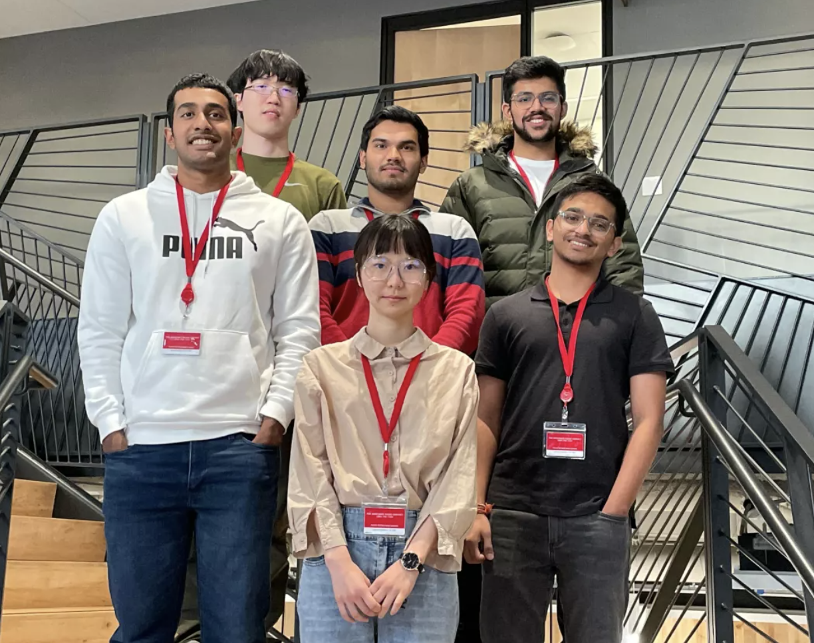
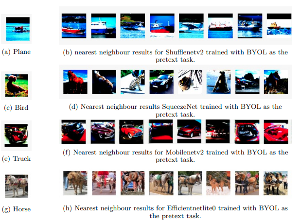

**** Disclaimer! Some of these things may be poorly maintained.*****
2023
-
One of the more ambitious projects I've taken on. Regulatory complaince documents can be 500+ page
long and released by the government quite often. It takes take weeks to go interpret and map those changes
to a company's internal policies.
-
SmartDiff aims to solve this problem by bringing down the whole workflow from 2 weeks to a few hours by using LLMs to
summarize, interpret and further map the changes to internal policies directly.
-
Other features include RAGs for question answering,
criticality tagger, a comnnunity driven platform for sharing insights and a lot more.
Oct 2023 - present

Alexa Prize (SocialBot Grand Challenge 5)
- Awarded a 250,000$ research grant. One of the 9 teams selected globally for building a SOTA social
bot (voice assistant) that can have
coherent and sensible social conversations with a user.
- Trained/finetuned various models for response ranking, user rating prediction and built the topic
injection, internet knowledge extraction and offensive classifier modules.
Oct 2022 - Oct 2023
Virtual Teaching Assistant
Feb 2023 - April 2023
2022
Distinguishing Acted and Natural speech during online Interviews
- Using audio processing, Deep learning, internet search and algorithms trained models and built a
chrome
extension that aids examiners by flagging cheating candidates in online interviews based on their
voice spectographs
and speech text.
- Created an audio data set of 800x2 samples (10 seconds each) of 2 classes; ’prompted speech’ and
’natural
speech’. Took an ensemble of classification models and achieved an accuracy of 84% on our test set.
Feb 2022
2021

Self Supervised learning using lightweight architectures
- Conducted research in self-supervised learning in images and trained models with lightweight
architectures like
Efficientnetlite, Mobilenetv2, shufflenetv2 using techniques like MOCOv2, BYOL, Rotnet.
- Established new baselines by pretraining and staggered downstream training, followed by evaluation
on STL-10.
- Trained models for novel techniques like relative rotations, multi-object insertions, and compared
results
against established baselines.
Nov 2020 - Nov 2021
Rock-Paper-Scissors Agent
- Explored various strategies while competing in a reinforcement learning-based rock paper scissors
tournament. Our
winning solution was an ensemble (weighted-average) of over 15 models and achieved a score of 983.3
on Kaggle’s
scoring scale.
- Used various algorithms like De Bruijn sequence, decision trees, memory patterns, and multi-armed
bandit.
August 2021
2020
Allertgy
- Built a model for classifying food items in a given image in addition to showing potentially
allergies inducing
ingredients, calories, and other details about the dish to the consumer.
- Achieved an 84% top-5 accuracy over 142 classes.
Dec 2020
Violence Detection
- Constructed a Violence detection software to detect ongoing violence in live CCTV cameras.
- Explored various strategies used in research papers and made our version, balancing accuracy and
execution time.
(71.85% accuracy)
Sept 2020 - Oct 2020